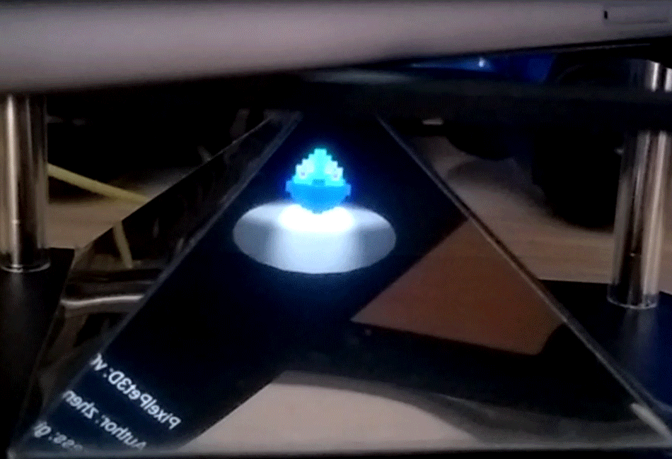

PixelPet3D - 3D电子宠物

需求分析
【用树莓派完成一个嵌入式系统】
具体来说，我组计划用树莓派外接一个
小型显示屏 作为核心，辅以一个用透明塑料片自制的
金字塔形装置 ，完成一个伪全息投影的立体的
电子宠物系统。
规格说明
1、关于显示屏：
通过Web服务，利用用户移动设备作为显示器，在浏览器中用 `WebGL` 技术渲染画面，多个设备可以同时访问Web服务，同步控制与展示。
2、关于金字塔：
将一张透明塑料片裁剪折叠成一个金字塔形装置，尖端贴在屏幕上，金字塔的四面将分别反射屏幕上的四个预先设计好角度的图案，从而在三维空间形成一个立体影像。
3、关于电子宠物：
宠物本体由一个三维16*16*16的像素数组来表示，通过 `threejs`
进行绘制。宠物的动作有多个三维数组作为关键帧，组成帧动画来表示。
系统分成
核心层
展示层
驱动层 三层结构
核心层：
处理电子宠物的基础逻辑，包括宠物的信息、当前的显示内容、用户交互控制、附加功能与小游戏等。
显示层：
将经由驱动层转发的核心层运算结果渲染并呈现给用户，同时也负责处理用户的交互控制操作。
驱动层：
连接核心层与显示层，将显示层用户的操作发往核心层进行处理，并将结果返还。另外还负责处理诸如多设备同步等问题。
屏幕动图
模块设计
1. C:
core分支
基础逻辑部分
包含三个主要模块：
| 名称 |
对应的包 |
职责 |
| 配置模块 |
config |
管理基本信息和配置，如应用名、版本号、作者、地址、宠物名称等 |
| 放映模块 |
screen |
屏幕内容的处理，根据用户操作执行相应的逻辑运算并进行界面渲染内容的切换 |
| 服务模块 |
server |
监听socket服务，将驱动层发来的请求转发给相应的控制器处理并返回结果 |
模块设计
2. JavaScript:
brower分支
基于浏览器的UI视觉呈现
主要包含四个模块：
| 名称 |
主要脚本 |
职责 |
| 核心模块 |
pp3d.js |
基本场景搭建、模型渲染 |
| 编辑模块 |
pp3d-editor.js |
提供创建和编辑模型的编辑器 |
| 交互模块 |
websocket.js |
处理用户操作，接收后端数据 |
| 资源模块 |
*.model.js |
宠物、菜单、时钟等各种模型的配置加载 |
模块设计
3. Python (with Tornado):
server分支
WebSocket服务器，连接树莓派（C语言）与用户浏览器（Js）
包含两个模块：
| 名称 |
主要脚本 |
职责 |
| 通信模块 |
connect_core.py |
与核心层的数据交互 |
| 服务模块 |
main.py |
显示层的Web后端 |
系统集成
系统呈插板式架构
主分支下执行 `run.sh` 脚本（命令： `./run.sh` ）就可以自动的拉取、编译并构建三个子分支的代码，组装完毕后开始部署运行。如果需要后台长期运行，请追加`-d`参数。
系统集成
目标环境为装配Raspbian系统的树莓派
但也能在其它带有 `gcc` 和`python3` 环境的Linux系统下部署。注意，第一次部署过程请务必保证网络畅通以便拉取代码并下载依赖，最好挂上VPN，一些资源可能需要翻墙获取。
系统集成
在树莓派|Linux系统上部署成功后
将会监听5000端口启动一个Web服务器，供局域网下设备访问。手机访问`http://部署设备的IP地址:5000`，配合定制的金字塔棱镜，就可以看到3D投影的电子宠物。